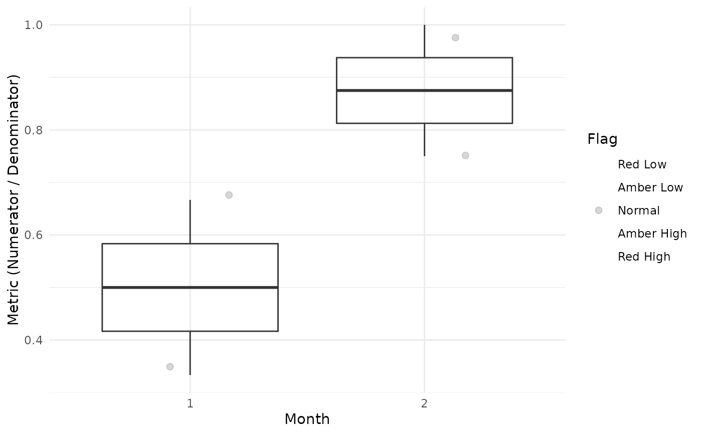

Visualize Metric Distribution by Month with Boxplots
VisualizeBoxplot.RdCreates a boxplot showing the distribution of Metric values for each sequential month, with individual points colored by Flag value to highlight outliers. Points are rendered behind the boxplots with reduced opacity.
Value
A ggplot2 object showing boxplots of Metric by NMonth with individual points colored by Flag value (diverging scale: red=low outlier, gray=normal, blue=high outlier).
Examples
library(dplyr)
dfSubjects <- data.frame(
SubjectID = c(1, 2, 3, 4),
SiteID = c("A", "A", "B", "B")
)
dfNumerator <- data.frame(
SubjectID = c(1, 1, 2, 3, 4, 4, 4),
EventDate = as.Date(c(
"2022-01-01", "2022-01-15", "2022-02-01",
"2022-01-10", "2022-01-05", "2022-01-20", "2022-02-01"
))
)
dfDenominator <- data.frame(
SubjectID = c(1, 1, 2, 2, 3, 3, 4, 4),
VisitDate = as.Date(c(
"2022-01-01", "2022-01-20", "2022-01-01", "2022-02-01",
"2022-01-01", "2022-01-15", "2022-01-01", "2022-02-01"
))
)
dfFlagged <- Timeline(
dfSubjects = dfSubjects,
dfNumerator = dfNumerator,
dfDenominator = dfDenominator,
strGroupCol = "SiteID",
strSubjectCol = "SubjectID",
strNumeratorDateCol = "EventDate",
strDenominatorDateCol = "VisitDate"
) %>%
TimeZScore() %>%
Flag()
#> ℹ Sorted dfFlagged using custom Flag order: 2.Sorted dfFlagged using custom Flag order: -2.Sorted dfFlagged using custom Flag order: 1.Sorted dfFlagged using custom Flag order: -1.Sorted dfFlagged using custom Flag order: 0.
# Show all months
VisualizeBoxplot(dfFlagged)
 # Show only first 10 months
VisualizeBoxplot(dfFlagged, nMonths = 1:10)
# Show only first 10 months
VisualizeBoxplot(dfFlagged, nMonths = 1:10)
